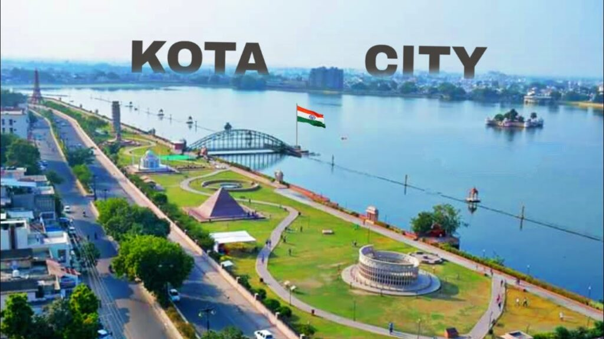

Ajmer District
Ajmer district is a district in the Indian state of Rajasthan. It is part of the Ajmer division–one of the ten administrative divisions of Rajasthan. The city of Ajmer is the district headquarters. The district is situated in the center of Rajasthan, and is bounded by Didwana Kuchaman district to the north, Jaipur Rural and Dudu to the north-east, Tonk to the east, Kekri and Beawar to the south,and Nagaur to the west. It has an area of 8,481 km2 (3,275 sq mi), and a population of 2,583,052 (2011 census).

Jaipur District
According to the 2011 census Jaipur district has a population of 6,626,178,[3] roughly equal to the nation of Libya[6] or the US state of Washington.[7] This gives it a ranking of 10th in India (out of a total of 640).[3] The district has a population density of 598 inhabitants per square kilometre (1,550/sq mi).[3] Its population growth rate over the decade 2001-2011 was 26.91%.[3] Jaipur has a sex ratio of 909 females for every 1000 males,[3] and a literacy rate of 76.44%. 52.40% of the population lives in urban areas. Scheduled Castes and Scheduled Tribes make up 15.14% and 7.97% of the population respectively.


PALI District
Pali district is a district in Rajasthan, India. The city of Pali is its administrative headquarters. Pali is also known as the Industrial/Textile City and has been a hub for merchant activities for centuries. It has a rich heritage and culture, including beautiful Jain temples and other elaborate monuments.

Rajsamand District
Rajsamand is a city, located in Rajsamand district of Rajasthan, western India. The city is named for Rajsamand Lake, an artificial lake created in the 17th century by Rana Raj Singh of Mewar.It is the administrative headquarters of Rajsamand District.
Jodhpur District
Jodhpur ( pronounced [ˈd͡ʒoːd̪ʱpʊr] listenⓘ) is the second-largest city in the Indian state of Rajasthan and officially the second metropolitan city of the state. Jodhpur was historically the capital of the Kingdom of Marwar, which is now part of Rajasthan. Jodhpur is a popular tourist destination, featuring many palaces, forts, and temples, set in the stark landscape of the Thar Desert. It is popularly known as the "Blue City" among people of Rajasthan and all over India.[1] It serves as the administrative headquarters of the Jodhpur district and Jodhpur division. The old city circles the Mehrangarh Fort and is bounded by a wall with several gates.[10] The city has expanded greatly outside the wall, though over the past several decades. Jodhpur lies near the geographic centre of the Rajasthan state, which makes it a convenient base for travel in a region much frequented by tourists.[1] The city featured in The New York Times's "52 Places to Go in 2020"

Udaipur District
Udaipur (Hindi: IPA: [ʊdəjpʊɾ], pronunciationⓘ) (ISO 15919: Udayapura) is a city and municipal corporation in Udaipur district of the state of Rajasthan, India.[3][4] It is also known as the 'City of Lakes' [5] and serves as the administrative headquarters of Udaipur district. It is the historic capital of the kingdom of Mewar in the former Rajputana Agency. It was founded in 1559 by Udai Singh II of the Sisodia clan of Rajputs,[6] when he shifted his capita from the city of Chittorgarh to Udaipur after Chittorgarh was besieged by Akbar. It remained as the capital city till 1818 when it became a British princely state,[6] and thereafter the Mewar province became a part of Rajasthan when India gained independence in 1947.[7] The city is located in the southernmost part of Rajasthan, near the Gujarat border. It is surrounded by the Aravali Range, which separates it from the Thar Desert. It is placed close to the median point between two major Indian metro cities, around 660 km from Delhi and 800 km from Mumbai. Besides, connectivity with Gujarat ports provide Udaipur a strategic geographical advantage.[8] Udaipur is well connected with nearby cities and states by means of road, rail and air transportation facilities. The city is served by the Maharana Pratap Airport. Common languages spoken include Hindi, English and Rajasthani (Mewari). Dubbed "the most romantic spot on the continent of India" by British administrator James Tod,[9] Udaipur is a tourist destination and is known for its history, culture, scenic locations and the Rajput-era palaces. It has seven lakes surrounding the city. Five of the major lakes, namely Fateh Sagar Lake, Lake Pichola, Swaroop Sagar Lake, Rangsagar, and Doodh Talai Lake, have been included under the restoration project of the National Lake Conservation Plan (NLCP) of the Government of India.[10] Besides lakes, Udaipur is also known for its historic forts and palaces, museums, galleries, natural locations and gardens, architectural temples, as well as traditional fairs, festivals and structures.[11] Due to the several lakes present here, it is sometimes dubbed "Venice of the East".[12][13] Udaipur economy is primarily driven by tourism, though minerals, marble processing, chemical manufacturing and development, electronic manufacturing and the handicraft industry are also contributors.[14] Udaipur hosts several state and regional public offices, including offices of Director of Mines and Geology, Commissioner of Excise, Commissioner of Tribal Area Development, Hindustan Zinc Limited, and Rajasthan State Mines and Mineral Corporation Limited. Besides, Udaipur is rising as educational hub as well, with 5 Universities, 14 colleges and more than 160 high schools.[14] Udaipur is home to IIM Udaipur, the fifth best management institution in the country according to NIRF ranking released by the MHRD.

Barmer District
armer is a city and municipal council in the Barmer district in the state of Rajasthan, India. It is the administrative headquarters of Barmer district. It is a Group 'C' city for living standards, and the headquarters of the Barmer tehsil, Rajasthan. Demographics As of the 2011 Census, Barmer had a population of 100,051. The population of the 0-6 year age range was 22% of the total population. Barmer had an average literacy rate of 56.53%; gender-wise, 70% of males and 30% of females are literate.[2]Religion Religion in Barmer city (2011) Hinduism (81.43%) Jainism (11.75%) Islam (6.4%) Other (0.42%) Geography This district is spread across an area of 28,387 km2 . Barmer district is the third largest district of Rajasthan State. This district is famous for its vegetation like khejari, ber, ker, sangari and anar ( promegrante ). It is located between 24°58' and 26°32' N and between 70°05' and 72°52' E. The district forms a part of the Thar desert and is situated in the western part of the State.

Kota District
Kota (/ˈkoʊtə/ ⓘ), previously known as Kotah, is a city in the southeast of the northern Indian state of Rajasthan.[7] It is located about 240 kilometres (149 mi) south of the state capital, Jaipur, situated on the banks of Chambal River. With a population of over 1.2 million, it is the third most populous city of Rajasthan after Jaipur and Jodhpur, 46th most populous city of India and 53rd most populous urban agglomeration of India. It serves as the administrative headquarters for Kota district and Kota division. It is popular among the youth of India for its coaching institutes for engineering and medical entrance examinations. Many students come to Kota to prepare for the JEE, NEET and many other competitive exams,[8] making it an Edtech city. The city of Kota was once the part of the erstwhile Rajput kingdom of Bundi. It became a separate princely state in the 16th century. Apart from the several monuments that reflect the glory of the town, Kota is also known for its palaces and gardens .[9][10] The city was also included among 98 Indian cities for Smart Cities Mission initiated by Indian Prime Minister Narendra Modi in 2015[11] and was listed at 67th place after results of first round were released following which top 20 cities were further selected for funding in the immediate financial year.
Jaisalmer District
Jaisalmer (pronunciation)ⓘ, nicknamed "The Golden city", is a city in the Indian state of Rajasthan, located 575 kilometres (357 mi) west of the state capital Jaipur. It is the administrative headquarters of Jaisalmer District. Before Indian independence, the town served as the capital of the Jaisalmer State, ruled by the Bhati Rajputs.[7] Jaisalmer stands on a ridge of yellowish sandstone and is crowned by the ancient Jaisalmer Fort. This fort contains a royal palace and several ornate Jain temples. Many of the houses and temples of both the fort and of the town below are built of finely sculptured sandstone. The town lies in the heart of the Thar Desert (the Great Indian Desert) and has a population, including the residents of the fort, of about 78,000.


Chhittorgarh District
Chittorgarh pronunciationⓘ (also Chitror or Chittor or Chittaurgarh ) is a major city in the state of Rajasthan in western India. It lies on the Berach River, a tributary of the Banas, and is the administrative headquarters of Chittorgarh District. It was a major stronghold of the Rajput State of Medapata. (modern Mewar) The city of Chittorgarh is located on the banks of river Gambhiri and Berach. Chittorgarh is home to the Chittor Fort, the largest living fort in India and Asia. It was sacked thrice; first in 1303 by Alauddin Khalji, again in 1535 by Bahadur Shah of Gujarat, and lastly by the Mughal Emperor Akbar in 1568. Its Hindu Rajput rulers fought fiercely to maintain their independence. On all three occasions when faced with a certain defeat, the men fought to death, while the women committed suicide by jauhar (mass self-immolation). Chittor also has been a land of worship for Meera. It is also known for Panna Dai and Rani Padmini.